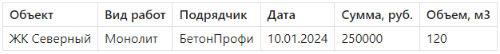

Расчетные поля

Андрей, добро пожаловать! Сегодня мы научимся создавать расчетные поля в сводных таблицах. Это продвинутый, но очень мощный инструмент, особенно когда нужно анализировать удельные показатели, проценты, рентабельность — одним словом, не просто сумму или количество, а то, что рассчитывается на основе уже имеющихся данных.
После этого урока ты сможешь делать такие вещи, как:
- автоматически рассчитывать «стоимость за м²»;
- выводить «процент работ по подрядчику»;
- сравнивать плановые и фактические показатели прямо внутри сводной.
Это сэкономит тебе уйму времени при составлении технических и управленческих отчетов. Поехали!
Что такое расчетное поле
Расчетное поле — это поле, которое создается вручную внутри сводной таблицы на основе других полей.
Пример
= 'Сумма, руб.' / 'Площадь, м²
Если таких полей в исходной таблице нет, но они тебе нужны — используй расчетное поле.
Как добавить расчетное поле
- Кликни в любую ячейку сводной таблицы.
- Перейди во вкладку «Анализ сводной таблицы» → «Поля, элементы и наборы» → «Расчетное поле».
- Введи:
Имя поля (например, «Удельная стоимость»)
Формулу, используя названия полей (например, 'Сумма, руб.' / 'Объем, м3') - Нажми Добавить → ОК
Формулы в расчетных полях — это не Excel-формулы, а специфический формат для сводных таблиц. Работают только базовые арифметические действия: + - * /.
💡 Советы и нюансы
Совет 1. Работай с числовыми полями.
Если поле содержит текст или дату, оно не подойдет для расчетов. Предварительно убедись, что тип данных — число.
Не используй ссылок на ячейки.
Расчетное поле оперирует не координатами, а именами полей.
Совет 3. Проверь деление на ноль.
Если есть вероятность, что знаменатель будет равен нулю — Excel выведет ошибку.
Решения:
- добавить обработку ошибок в исходные данные (например, заменить нули на 1);
- или использовать Power Pivot, где доступны полноценные формулы с `IF`.
Совет 4. Поля доступны только в той сводной таблице, где они созданы.
Если нужно использовать поле в других местах — придется добавить его заново.
Совет 5. Переименуй расчетные поля для наглядности.
Не оставляй «Поле1», «Поле2» — назови четко: «Цена за м²», «% по подрядчику» и т.п.
Практическая часть
📁 Используй файл `Данные по работам.xlsx`. Добавь столбец «Объем, м3» в данные:

📌 Задача:
1. Построй сводную таблицу:
- Строки: Объект
- Значения: Сумма, руб.
- Добавь расчетное поле: = 'Сумма, руб.' / 'Объем, м3' → назови его «Удельная стоимость, руб./м3»
2. Протестируй:
- Срез по подрядчику
- Сортировку по убыванию удельной стоимости
3. Попробуй создать поле:
= 'Сумма, руб.' * 0.2` — для оценки 20% запаса бюджета